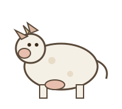
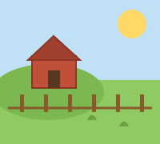
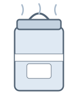

Dairy farming is an important part of rural India's economy. Small farmers depend on daily milk collection for a steady income. A dairy cooperative society collects milk from farmers every morning and evening, tests its quality, and pays the farmers based on the quantity and quality of milk.
Our Dairy Management System makes this process digital. It records every farmer, every milk collection, the fat and SNF value of each sample, and generates the payment and reports automatically.
Every day, the society follows this simple process:
Registered farmers get the following services:



With digital records, farmers get accurate payments and the society can plan for the future. This project brings all of that into one simple web system.